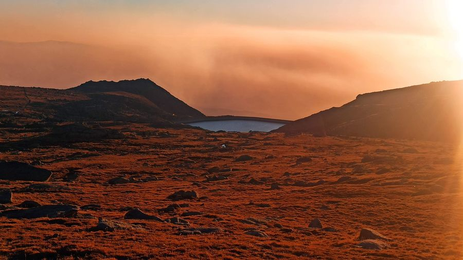

Да видим яз. Калин и хижата да посетим!
Събираме Железният екип отново!
Приятели, на 14.10. се отправяме на нов поход високо в планината - чак до язовир Калин. Ще се потопим отново в красивата Рила с нашите приятели с увреждания и споделим топъл чай в хижа "Иван Вазов".
След успешното ни, изпълнено с предизвикателства и силно емоционално достигане до х. "Рибни езера", на 02.09.23, е време да направим още една решителна крачка напред и стигнем до най-високопланинския язовир "Калин", продължавайки към х. "Иван Вазов".
Ние, групата ентусиасти от фондация "Ела и Ти" вече 6 години помагаме на трудно подвижни и напълно неподвижни хора да посещават труднодостъпните места, закътани в нашата природа - планини, пещери, езера и язовири, през всички месеци на годината.
Запиши се за участие. Местата са силно ограничени:
Събитието ни се реализира с подкрепата на нашите приятели - доброволците от ПСС - отряд Дупница и ТД "Рилски езера", АСП
Целта ни и този път е да съберем доброволци, с чиято помощ да придвижим специализираните носилки с нашите приятели, за да видят с очите си красотата на приказния язовир "Калин, да достигнат до високопланинска хижа и имат силно преживяване, гледки, които не могат да бъдат уловени в снимка.
Всички участници са нетърпеливи за това незабравимо преживяване. Оборудването и носилките са осигурени и сега събираме нашия екип от всеотдайни доброволци, без които нищо от това няма да стане реалност.
Имаме нужда от подкрепа на доброволци с джипове!!!
Ние търсим точно теб - човекът с голямото сърце, който обича планината, който ще даде от времето и силата си, за да помогне на друг. Човекът, който вярва, че “невъзможно” е само дума и притежава физическата издръжливост да успява в начинанията си!
Ако това си ти, Ела с нас на 14 октомври и се включи в носенето на носилките, помогни ни с качването на багажа и предварителната организация на всичко това.
Мястото на срещата ни ще бъде на 14.10.23. в гр. Рила в 8:30 часа!!!
В зависимост от това колко души ще се съберем, ще направим предварително разпределение по колите, за да оптимизираме местата.
До изходната точка ще стигнем с джипове, а от там до язовир "Калин". От Винтчето при язовир Калин ще се отправим към х. Иван Вазов", придвижвайки нашите приятели в специализирани носилки-колички.
Ако искаш да станеш част от Железния екип на Ела и Ти - пиши на страницата на фондацията @elaitifoundation, на мейла ни или позвъни на организаторите:
- Ради
- Павката
В страницата ни ще качваме информация за това как върви организацията и ще сме на разположение да отговаряме на въпроси от страна на доброволците!
Ела и Ти!
Заслужава си!
„ЕЛА И ТИ“ – фондация
